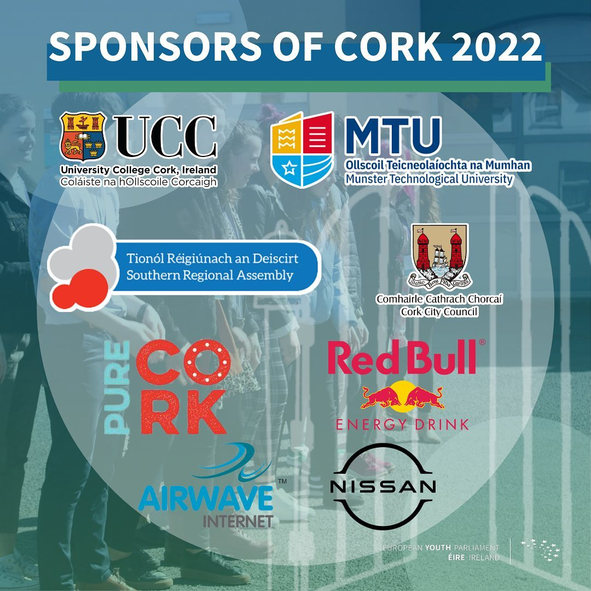

Mission of EYP Ireland
The European Youth Parliament (EYP) Ireland is a non-profit, non-partisan organisation that runs a number of weekend long conferences every year for young
people. EYP Ireland is one of 36 national committees of the European Youth Parliament International, the European umbrella organization of our organisation.
It is our mission in EYP Ireland to develop an interest in European issues in young people in Ireland. We seek to empower the youth to question the world
around them and come up with innovative solutions to global problems, while emphasising concepts of cooperation and respect. It is with great pleasure that
we invite you to join us in this mission, and let the voices of our young people be heard.
Elements of an EYP Session
An EYP Session is split into three distinct parts and takes place over a weekend; Teambuilding, Committee Work and General Assembly. The basic idea of a
session is that the delegates come together in Committees, with each Committee discussing a different European related topic. Having taken part in team
building exercises, the delegates participate in Committee Work, producing a resolution on their topic which is then debated in General Assembly.
TEAMBUILDING
This part of the session focuses on developing communication and group dynamics among the delegates in a committee. Under the direction of an experienced
and trained young chairperson, each committee engages in a variety of activities together.
COMMITTEE WORK
This is the main working part of the session, in which each committee concerns themselves with their assigned relevant topic. The delegates brainstorm and
debate their issue, eventually coming to compromises and forming a joint opinion and vision to deal with the problem put in front of them. Their solutions
are delivered in the form of Resolutions, a booklet outlining the issues they identified within the topic and solutions to said issues.
GENERAL ASSEMBLY
This element of the session aims to simulate the workings of the European Parliament. All committees gather and following the procedures of the European
Parliament present their resolutions to the assembly.
Sponsors
